🎵 Радіо УКРАЇНИ & СВІТУ 🎵
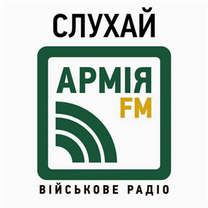
Armiya FM
Hit FM
Kiss FM
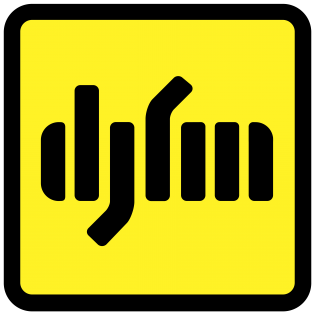
DJ FM
NRJ Ukraine
Melodia FM
Classic Radio
Kraina FM
Hromadske Radio
Radio Relax Live
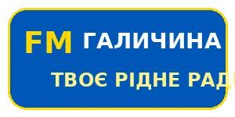
FM Galychyna
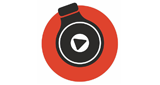
Informator FM
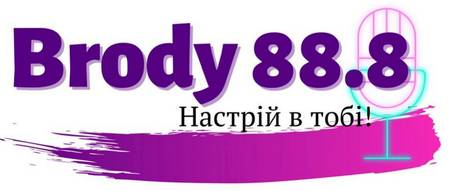
Brody FM
Buske Radio
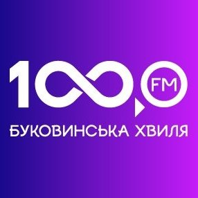
Буковинська хвиля
Lviv Duzhe Radio
Dnipro Europa Plus
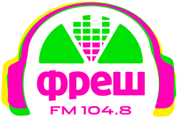
Fresh FM
Голос Прикарпаття
Golos Stryia
Гуцульська столиця
Zhytomyr 106.1 FM
Kremenchuk Автохвиля
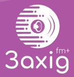
ZFM
Lutsk Аверс FM
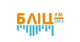
Bila Tserkva Blits FM
Korosten New Day FM
Berehove Pulzus FM
Chernivtsi Radio 10
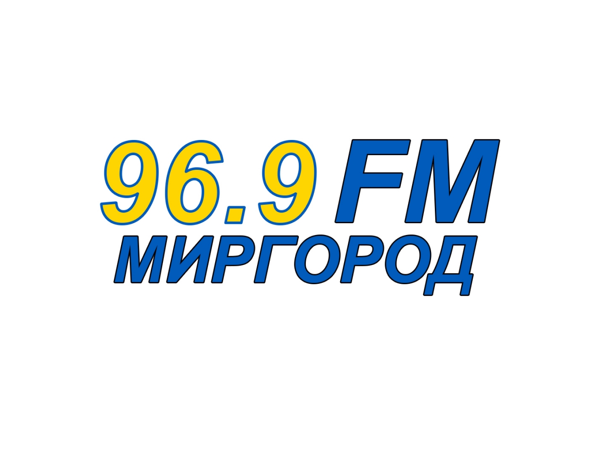
Myrgorod FM
Radio Radekhiv
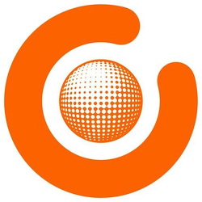
Radio Sfera FM
Vinnytsya Radio Takt
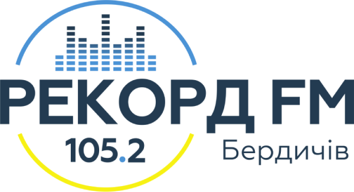
Berdychiv Rekord FM
Radio ROKS
Radio Relax
Radio Jazz
Люкс FM
Радіо Максимум
Радіо Nostalgie

Радіо NV

Радіо Промінь

Радіо Культура
Українське Радіо
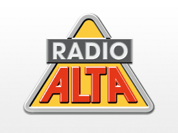
Львівська Хвиля
Авторадіо Україна
Power FM

Шансон Україна
Наше Радіо
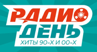
Lounge FM
Київ FM 98.0
Радіо Трек
Radio ROKS Classic
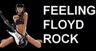
Прямий FM

Єдині Новини
Radio Gold UA
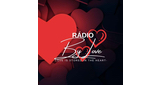
Гуляй Радіо

РокРадіо UA
Закарпаття FM
Радіо Марія
Радіо ПТРК
Megapolis FM
MFM Station
Голос FM

Radio ROKS Ballads

Radio ROKS Український Рок

Radio Relax International
Radio Relax Cafe

Radio Relax Instrumental

Radio Jazz Gold
Radio Jazz Light
Hit FM Top Hits

Hit FM Найбільші Хіти

Hit FM Українські Хіти
Kiss FM Deep

Kiss FM Ukrainian

Kiss FM Digital
NRJ France Hits
Capital FM UK
1LIVE WDR Germany
KIIS FM Los Angeles
Z100 New York
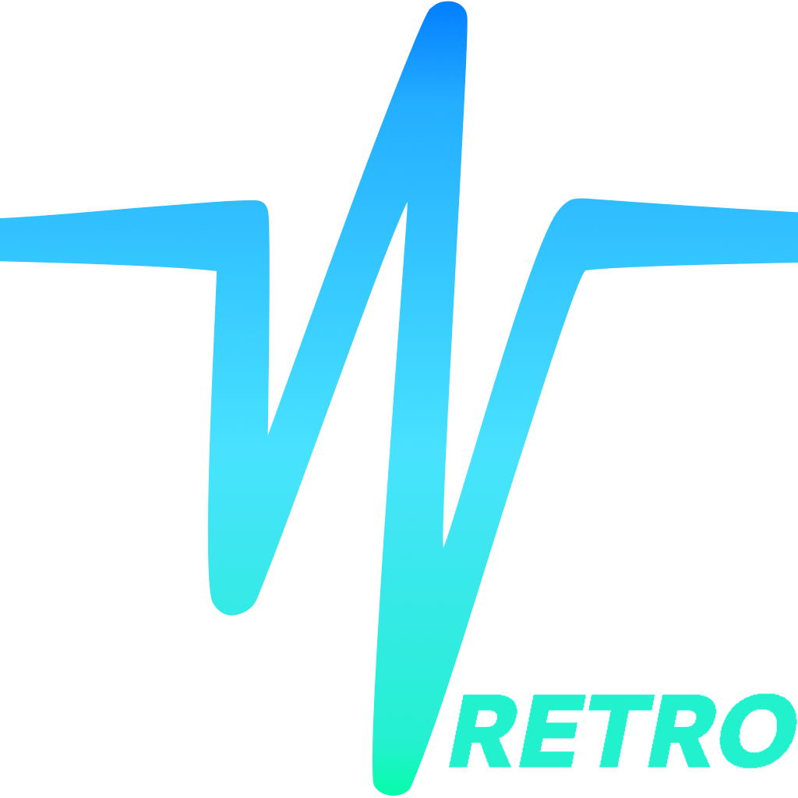
Dance Wave Top Hits

Radio FG Paris Dance
Amsterdam Trance
Sunshine Live Trance
Sunshine Live Techno
Sunshine Live 90s
Smooth Radio UK
Swiss Jazz
EuroDance 90s Radio
Heart 90s UK Hits
Heart 00s UK Hits
Swiss Classic
Radio BOB! Rock
Melodia Романтика
Melodia Disco
Swiss Pop
Classic FM UK
Smooth Chill UK